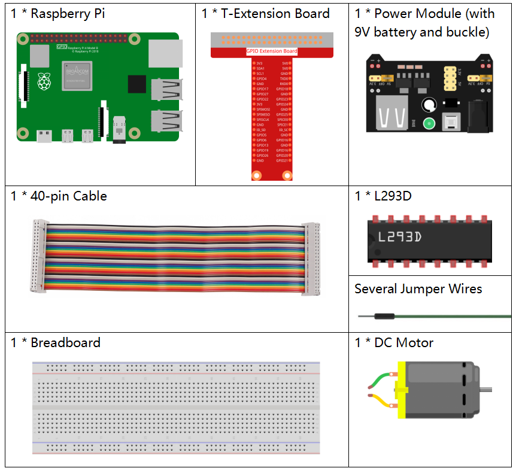
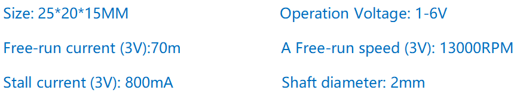

Nota
Ciao e benvenuto nella SunFounder Raspberry Pi & Arduino & ESP32 Enthusiasts Community su Facebook! Approfondisci le tue conoscenze su Raspberry Pi, Arduino ed ESP32 insieme ad altri appassionati.
Perché unirsi?
Supporto esperto: Risolvi problemi tecnici e post-vendita con l’aiuto della nostra comunità e del nostro team.
Impara e condividi: Scambia suggerimenti e tutorial per migliorare le tue competenze.
Anteprime esclusive: Accedi in anteprima agli annunci dei nuovi prodotti e alle anticipazioni.
Sconti speciali: Godi di sconti esclusivi sui nostri ultimi prodotti.
Promozioni e omaggi festivi: Partecipa a omaggi e promozioni durante le festività.
üëâ Pronto per esplorare e creare con noi? Clicca [Qui] e unisciti oggi!
1.3.1 Motore
Introduzione
In questa lezione, impareremo a utilizzare l’L293D per controllare un motore DC, facendolo ruotare in senso orario e antiorario. Poiché il motore DC richiede una corrente elevata, per ragioni di sicurezza useremo il Modulo di Alimentazione per alimentare i motori.
Componenti
Principio
L293D
L’L293D è un driver motore a 4 canali integrato in un chip ad alta tensione e corrente. È progettato per collegarsi a livelli logici standard DTL, TTL, e per azionare carichi induttivi (come relè, motori DC, motori passo-passo) e transistor per il controllo di potenza. I motori DC convertono l’energia elettrica in energia meccanica e sono ampiamente usati per il loro eccellente controllo della velocità.
Guarda l’immagine dei pin di seguito. L’L293D ha due pin (Vcc1 e Vcc2) per l’alimentazione: Vcc2 alimenta il motore, mentre Vcc1 alimenta il chip. Dato che qui utilizziamo un motore DC di piccole dimensioni, collega entrambi i pin a +5V.

La figura seguente mostra la struttura interna dell’L293D. Il pin EN è un pin di abilitazione e funziona solo con livello alto; A rappresenta l’ingresso e Y l’uscita. La relazione tra essi è mostrata in basso a destra. Quando EN è alto, se A è alto, Y emette livello alto; se A è basso, Y emette livello basso. Quando EN è basso, l’L293D non funziona.
Motore DC

Questo è un motore DC a 5V. Ruota quando viene alimentato con una tensione tra i due terminali. Per comodità, puoi saldare i pin.
Modulo di Alimentazione
In questo esperimento, sono necessarie correnti elevate per alimentare il motore, soprattutto durante l’avvio e l’arresto, il che potrebbe interferire con il funzionamento del Raspberry Pi. Pertanto, alimentiamo separatamente il motore con questo modulo per garantire stabilità e sicurezza.
È sufficiente collegarlo alla breadboard per fornire alimentazione. Fornisce una tensione di 3,3V e 5V, e puoi selezionare l’opzione tramite un ponticello incluso.

Diagramma Schematico
Collega il modulo di alimentazione alla breadboard e inserisci il ponticello sul pin da 5V, quindi erogherà una tensione di 5V. Collega il pin 1 dell’L293D a GPIO22, impostandolo su livello alto. Collega il pin2 a GPIO27 e il pin7 a GPIO17, impostando uno dei pin su alto e l’altro su basso. In questo modo puoi cambiare la direzione di rotazione del motore.

Procedure Sperimentali
Passo 1: Costruisci il circuito.

Nota
Il modulo di alimentazione può essere collegato a una batteria da 9V tramite il connettore 9V incluso nel kit. Inserisci il ponticello del modulo di alimentazione nella striscia da 5V della breadboard.

Per gli Utenti del Linguaggio C
Passo 2: Accedi alla cartella del codice.
cd ~/davinci-kit-for-raspberry-pi/c/1.3.1/
Passo 3: Compila.
gcc 1.3.1_Motor.c -lwiringPi
Passo 4: Esegui il file eseguibile sopra.
sudo ./a.out
Quando il codice viene eseguito, il motore ruota prima in senso orario per 5s, quindi si ferma per 5s. Successivamente ruota in senso antiorario per 5s e si ferma di nuovo per 5s. Questa sequenza di azioni verrà eseguita ripetutamente.
Nota
Se il programma non funziona, o se appare l’errore: "wiringPi.h: No such file or directory", consulta Il codice C non funziona?.
Codice
#include <wiringPi.h>
#include <stdio.h>
#define MotorPin1 0
#define MotorPin2 2
#define MotorEnable 3
int main(void){
int i;
if(wiringPiSetup() == -1){ //in caso di errore di inizializzazione stampa il messaggio
printf("setup wiringPi failed !");
return 1;
}
pinMode(MotorPin1, OUTPUT);
pinMode(MotorPin2, OUTPUT);
pinMode(MotorEnable, OUTPUT);
while(1){
printf("Clockwise\n");
delay(100);
digitalWrite(MotorEnable, HIGH);
digitalWrite(MotorPin1, HIGH);
digitalWrite(MotorPin2, LOW);
for(i=0;i<3;i++){
delay(1000);
}
printf("Stop\n");
delay(100);
digitalWrite(MotorEnable, LOW);
for(i=0;i<3;i++){
delay(1000);
}
printf("Anti-clockwise\n");
delay(100);
digitalWrite(MotorEnable, HIGH);
digitalWrite(MotorPin1, LOW);
digitalWrite(MotorPin2, HIGH);
for(i=0;i<3;i++){
delay(1000);
}
printf("Stop\n");
delay(100);
digitalWrite(MotorEnable, LOW);
for(i=0;i<3;i++){
delay(1000);
}
}
return 0;
}
Spiegazione del Codice
digitalWrite(MotorEnable, HIGH);
Abilita l’L293D.
digitalWrite(MotorPin1, HIGH);
digitalWrite(MotorPin2, LOW);
Imposta un livello alto per 2A (pin 7); poiché 1,2EN (pin 1) è a livello alto, 2Y emetterà un livello alto.
Imposta un livello basso per 1A, così 1Y emetterà un livello basso e il motore inizierà a ruotare.
for(i=0;i<3;i++){
delay(1000);
}
Questo ciclo è un ritardo per 3*1000ms.
digitalWrite(MotorEnable, LOW)
Quando 1,2EN (pin1) è a livello basso, l’L293D non funziona. Il motore si ferma.
digitalWrite(MotorPin1, LOW)
digitalWrite(MotorPin2, HIGH)
Inverte la direzione della corrente nel motore, facendolo ruotare nel senso opposto.
Per Utenti del Linguaggio Python
Passo 2: Accedi alla cartella del codice.
cd ~/davinci-kit-for-raspberry-pi/python
Passo 3: Esegui.
sudo python3 1.3.1_Motor.py
Quando il codice viene eseguito, il motore ruota prima in senso orario per 5s, poi si ferma per 5s, successivamente ruota in senso antiorario per 5s, e si ferma di nuovo per 5s. Questa sequenza di azioni si ripete continuamente.
Codice
Nota
È possibile Modificare/Reimpostare/Copiare/Eseguire/Arrestare il codice qui sotto. Tuttavia, prima è necessario spostarsi nel percorso del codice sorgente, come davinci-kit-for-raspberry-pi/python.
#!/usr/bin/env python3
import RPi.GPIO as GPIO
import time
# Imposta i pin
MotorPin1 = 17
MotorPin2 = 27
MotorEnable = 22
def setup():
# Imposta la numerazione GPIO in modalità BCM
GPIO.setmode(GPIO.BCM)
# Configura i pin come output
GPIO.setup(MotorPin1, GPIO.OUT)
GPIO.setup(MotorPin2, GPIO.OUT)
GPIO.setup(MotorEnable, GPIO.OUT, initial=GPIO.LOW)
# Definisce una funzione per controllare il motore
# direzione deve essere
# 1 (orario), 0 (fermo), -1 (antiorario)
def motor(direction):
# Rotazione in senso orario
if direction == 1:
# Imposta direzione
GPIO.output(MotorPin1, GPIO.HIGH)
GPIO.output(MotorPin2, GPIO.LOW)
# Abilita il motore
GPIO.output(MotorEnable, GPIO.HIGH)
print ("Clockwise")
# Rotazione in senso antiorario
if direction == -1:
# Imposta direzione
GPIO.output(MotorPin1, GPIO.LOW)
GPIO.output(MotorPin2, GPIO.HIGH)
# Abilita il motore
GPIO.output(MotorEnable, GPIO.HIGH)
print ("Counterclockwise")
# Stop
if direction == 0:
# Disabilita il motore
GPIO.output(MotorEnable, GPIO.LOW)
print ("Stop")
def main():
# Crea un dizionario per rendere lo script più leggibile
# CW per orario, CCW per antiorario, STOP per fermare
directions = {'CW': 1, 'CCW': -1, 'STOP': 0}
while True:
# Rotazione in senso orario
motor(directions['CW'])
time.sleep(5)
# Fermo
motor(directions['STOP'])
time.sleep(5)
# Rotazione in senso antiorario
motor(directions['CCW'])
time.sleep(5)
# Fermo
motor(directions['STOP'])
time.sleep(5)
def destroy():
# Ferma il motore
GPIO.output(MotorEnable, GPIO.LOW)
# Rilascia le risorse
GPIO.cleanup()
# Se si esegue direttamente questo script:
if __name__ == '__main__':
setup()
try:
main()
# Quando viene premuto 'Ctrl+C', il programma
# eseguirà destroy().
except KeyboardInterrupt:
destroy()
Spiegazione del Codice
def motor(direction):
# Rotazione oraria
if direction == 1:
# Imposta direzione
GPIO.output(MotorPin1, GPIO.HIGH)
GPIO.output(MotorPin2, GPIO.LOW)
# Abilita il motore
GPIO.output(MotorEnable, GPIO.HIGH)
print ("Clockwise")
...
Crea una funzione motor() il cui parametro è direzione. Quando la condizione direction=1 è soddisfatta, il motore ruota in senso orario; se direction=-1, ruota in senso antiorario; e quando direction=0, si ferma.
def main():
# Crea un dizionario per rendere lo script più leggibile
# CW per orario, CCW per antiorario, STOP per fermo
directions = {'CW': 1, 'CCW': -1, 'STOP': 0}
while True:
# Rotazione oraria
motor(directions['CW'])
time.sleep(5)
# Fermo
motor(directions['STOP'])
time.sleep(5)
# Rotazione antioraria
motor(directions['CCW'])
time.sleep(5)
# Fermo
motor(directions['STOP'])
time.sleep(5)
Nella funzione main(), crea un dizionario directions[], dove CW è uguale a 1, CCW è uguale a -1, e 0 si riferisce al comando Stop.
Quando il codice viene eseguito, il motore ruota inizialmente in senso orario per 5 secondi, poi si ferma per altri 5 secondi. Successivamente ruota in senso antiorario per 5 secondi, e infine si ferma di nuovo per 5 secondi. Questa sequenza di azioni si ripeterà.
Ora dovresti vedere le pale del motore ruotare.